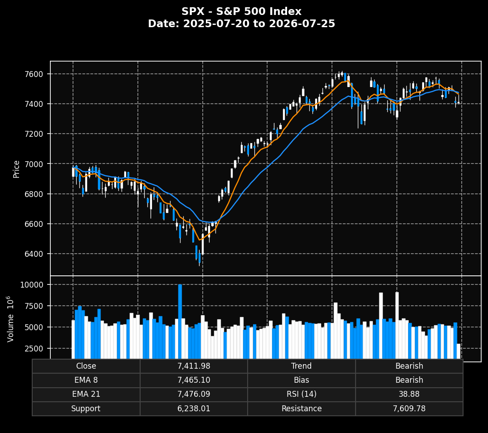

A strict-validated, multi-LLM synchronized market forecasting engine. This frontend directly renders repository assets for Demo Day.
Loaded from path: charts/W30/chart_SPX_W30.png

Covering SPX, NDX, IWM, and sector ETFs. Integrating automated R3-R8 pipelines and human-AI governance for reliable weekly predictions.